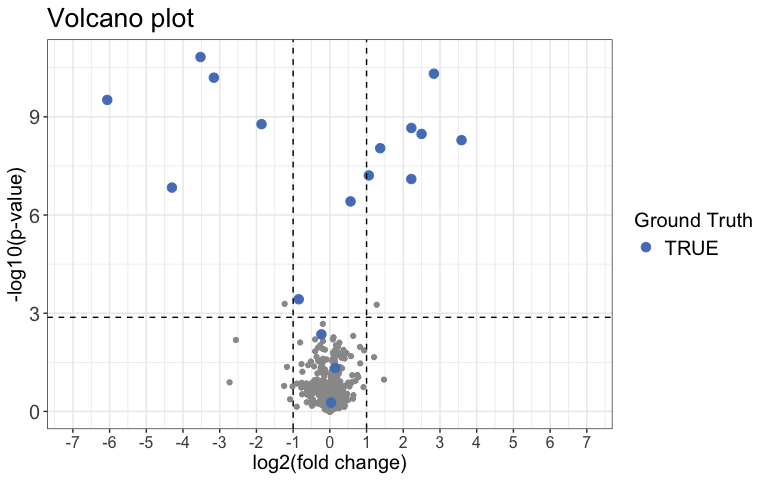

Overview
The goal of protti is to provide flexible functions and workflows for proteomics quality control and data analysis, within a single, user-friendly package. It can be used for label-free DDA, DIA and SRM data generated with search tools and software such as Spectronaut, MaxQuant, Proteome Discoverer and Skyline. Both limited proteolysis mass spectrometry (LiP-MS) and regular bottom-up proteomics experiments can be analysed.
protti is developed and maintained by members of the lab of Paola Picotti at ETH Zurich. Our lab is focused on protein structural changes that occur in response to perturbations such as metabolite, drug and protein binding-events, as well as protein aggregation and enzyme activation (Piazza 2018, Piazza 2020, Cappelletti, Hauser & Piazza 2021). We have devoloped mass spectrometry-based structural and chemical proteomic methods aimed at monitoring protein conformational changes in the complex cellular milieu (Feng 2014).
There is a wide range of functions protti provides to the user. The main areas of application are:
- Quality control: Check a multitude of quality control parameters in your data.
- Filter for quality: Prior to data analysis you can filter your data to exclude any observations that are of low quality and potentially not trustworthy.
- Imputation: You can choose to impute your data using several different methods.
-
Data analysis: Analyse your data for differential abundance of proteins, peptides or precursors.
- Binary treatment: Experiments with one control condition and at least one treatment condition in which the control is compared to each of the treatment conditions.
- Dose-response treatment: Experiments that contain increasing concentrations of the treatment in which a log-logistic dose-response curve is fitted to each protein, peptide or precursor in your data.
- Enrichment and interaction analysis: Check the list of your significantly changing proteins for e.g. gene ontology enrichments or perform a network analysis using the STRING database directly in R.
- Databases: You can easily access several databases relevant for proteomics (e.g. UniProt) and load any data that interests you directly into R.
Citation
The protti package has been peer-reviewed and was published in Bioinformatics Advances:
Jan-Philipp Quast, Dina Schuster, Paola Picotti. protti: an R package for comprehensive data analysis of peptide- and protein-centric bottom-up proteomics data. Bioinformatics Advances, Volume 2, Issue 1, 2022, vbab041, https://doi.org/10.1093/bioadv/vbab041
Please make sure to cite this publication if you used protti for your data analysis.
Installation
protti is implemented as an R package.
You can install the release version from CRAN using the install.packages() function.
install.packages("protti", dependencies = TRUE)You can install the development version from GitHub using the devtools package by copying the following commands into R:
Note: If you do not have devtools installed make sure to do so by removing the comment sign (#).
# install.packages("devtools")
devtools::install_github("jpquast/protti", dependencies = TRUE)The dependencies = TRUE argument in both install.packages() and devtools::install_github() also installs suggested packages that are required for some functions to work. If this argument is not included functions that use a package that is not installed by default will throw an error and prompt the user to install the missing package. If you happen to run into problems during the installation of protti we recommend removing this argument and installing packages manually if they are needed for a certain function.
Usage
Since protti is designed to be a flexible tool for the analysis of your data, there are many ways in which it can be used. In this section we will give a general overview for a very simple pipeline that takes a result from the search tool of your choice and in a few steps returns a list of significantly changing proteins or peptides. To ensure that you have your data in the right format please check out the input preparation vignette.
A complete list of functions and their documentation is available here. Within R you can access the same documentation by calling ? followed by the function name without parenthesis.
In general functions with the prefix qc_* are used for quality control of your data. Functions starting with fetch_* allow you to retrieve data from a database directly into your R session. When a function starts with filter_* it is meant to be used to filter your data prior to analysis.
For more in detail workflow suggestions and demonstrations of various functions, you can have a look at the package vignettes. These include:
- Input Preparation Workflow
- Quality Control Workflow
- Single Dose Treatment Data Analysis Workflow
- Dose-Response Data Analysis Workflow
- Protein Structure Analysis Workflow
Data analysis
In this example we are going to analyse synthetic data of which we know the ground truth. The same principles would apply to any real data. Before you start analysing your data you should load all required packages. protti is designed to work well with the tidyverse package family and we will use them for this example. Therefore, you should also load them before you get started. Note: If you do not have the tidyverse installed you can do so by removing the comment sign (#) in front of the install.packages() function. This will install them directly from CRAN.
# Load protti
library(protti)
# Install the tidyverse if necessary
# install.packages("tidyverse")
# Load tidyverse packages. Can also be done by calling library(tidyverse)
library(dplyr)
library(magrittr)Load Data
Usually the search tool of your choice generates a report for you that has either a .txt or .csv format. You can easily load reports into R by using the read_protti() function. This function is a wrapper around the fast fread() function from the data.table package and the clean_names() function from the janitor package. This will allow you to not only load your data into R very fast, but also to clean up the column names into lower snake case. This will make it easier to remember them and to use them in your data analysis.
# Load data
data <- read_protti("filename.csv")Since we will use synthetic data for this example we are going to call the create_synthetic_data() function from protti. Of course you do not need to do this step in your analysis pipeline.
The data this function creates is similar to data obtained from a LiP-MS experiment. Please note that any of the steps in this workflow can also be applied to protein abundance data that contains protein IDs and protein intensities.
set.seed(42) # Makes example reproducible
# Create synthetic data
data <- create_synthetic_data(n_proteins = 100,
frac_change = 0.05,
n_replicates = 4,
n_conditions = 2,
method = "effect_random",
additional_metadata = FALSE)
# The method "effect_random" as opposed to "dose-response" just randomly samples
# the extend of the change of significantly changing peptides for each condition.
# They do not follow any trend and can go in any direction.Clean and Normalise Data
Before you start analysing your data it is recommended that you filter out any observations not necessary for your analysis. These include for example:
- Decoys: Sometimes decoys are included in reports and it is advised to filter them out before data analysis.
- Contaminants: MaxQuant includes contaminant information in their reports. Contaminants are useful for quality control purposes but should be filtered out for analysis.
- Non-Proteotypic Peptides: For the analysis of LiP-MS data you should not include non-proteotypic peptides in your analysis since it is not possible to make sense of them in case they change significantly.
On your own data you can easily achieve this with dplyr’s filter() function. Our synthetic data does not require any filtering at this step.
Due to the fact that variances increase with increasing raw intensities, statistical tests would have a bias towards lower-intensity peptides or proteins. Therefore you should log2 transform your data to correct for this mean-variance relationship. We do not need to do this for the synthetic data as it is already log2 transformed. For your own data just use dplyr’s mutate() together with log2().
In addition to filtering and log2 transformation it is also advised to normalise your data to equal out small differences in overall sample intensities that result from unequal sample concentrations. protti provides the normalise() function for this purpose. For this example we will use median normalisation (method = "median"). This function generates an additional column called normalised_intensity_log2 that contains the normalised intensities.
Note: If your search tool already normalised your data you should not normalise it another time.
Assign Missingness
The next step is to deal with missing data points. You could choose to impute missing data in a later step, but this is only recommended if only a small proportion of your data is missing. In order to calculate statistical significance of differentially abundant peptides or proteins we would like to have at least a minimum number of observations per condition. The protti function assign_missingness() checks for each treatment-to-reference condition if the defined minimum number of observations is satisfied and assigns a missingness type to each comparison as follows.
If a certain condition has all replicates while the other one has less than 20% (adjusted downward) of total possible replicates, the case is considered to be “missing not at random” (MNAR). In order to be labeled “missing at random” (MAR) 70% (adjusted downward) of total replicates need to be present in both conditions. If you performed an experiment with 4 replicates that means that both conditions need to contain at least 2 observations. Comparisons that have too few observations are labeled NA. These will not be imputed if imputation is performed later on using the impute() function. You can read the exact details in the documentation of this function and also adjust the thresholds if you want to be more or less conservative with how many data points to retain.
data_missing <- normalised_data %>%
assign_missingness(sample = sample,
condition = condition,
grouping = peptide,
intensity = normalised_intensity_log2,
ref_condition = "condition_1",
retain_columns = c(protein, change_peptide))
# Next to the columns it generates, assign_missingness only contains the columns
# you provide as input in its output. If you want to retain additional columns you
# can provide them in the retain_columns argument.Note: Instead of “peptide” in the grouping argument you can provide protein IDs in case you are working with protein abundance data. However, then intensities should be protein intensities and not peptide intensities.
Calculate Differential Abundance and Significance
For the calculation of abundance changes and the associated significances protti provides the function calculate_diff_abundance(). You can choose between different statistical methods. For this example we will chose a moderated t-test.
The type of missingness assigned to a comparison does not have any influence on the statistical test. However, by default (can be changed) comparisons with missingness NA are filtered out prior to p-value adjustment. This means that in addition to imputation, the user can use missingness cutoffs also in order to define which comparisons are too incomplete to be trustworthy even if significant.
result <- data_missing %>%
calculate_diff_abundance(sample = sample,
condition = condition,
grouping = peptide,
intensity_log2 = normalised_intensity_log2,
missingness = missingness,
comparison = comparison,
filter_NA_missingness = TRUE,
method = "moderated_t-test",
retain_columns = c(protein, change_peptide))Next we can use a Volcano plot to visualize significantly changing peptides with the function volcano_plot(). You can choose to create an interactive plot with the interactive argument. Please note that this is not recommended for large datasets.
result %>%
volcano_plot(grouping = peptide,
log2FC = diff,
significance = pval,
method = "target",
target_column = change_peptide,
target = TRUE,
legend_label = "Ground Truth",
significance_cutoff = c(0.05, "adj_pval"))